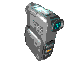
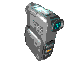
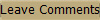

Hey everyone! Call me Danny, I am a university student who loves
retro technology.
Be it VCRs, Old Computers, Cassettes, Tube TV's,
or pretty much anything from the 90s, you name it I got it!
Since the past few years I've been acquiring lots of tech from my
childhood and before, rediscovering things,
learning about tech from
before my time and developing a fascination of it.
At this point in time I have about a few VCRs and old media players which
I enjoy watching old shows and movies
on. After digitizing some
tapes from my childhood many of which have deteriorated due to age,
I realized that all these media are
of finite lifespan and should
always have a backup, especially of precious memories!
I decided to start this page to help others in the community archive their
memories as well, and do things the right way so you
can always
access your memories regardless of how far in time we go.
My services are local and done in the comfort of my home, I am not a
professional by any means but I would love to make
this retro
technology hobby into something that can benefit others!

Many of
the old tapes I discover are recordings of old live TV shows with
lots of commercials that are not found anywhere
on the internet!
What I do is I digitize those tapes and upload them to YouTube so
they can be viewed by anyone, for the sake
of preserving commercial
history :)
You
can see my videos on the link below:
Click here to view my channel
  
This list may grow in the future as I get more older equipment
to tinker with and use to archive media but for now I can do:
1) VHS Tapes (Both PAL and NTSC) to DVD/USB/Google
Drive
Price:
$8.00 per 1 hour length tape +$3 per additional hours after that
(Example: 2 hour tape would be $11)
2) MiniDV Tapes (NTSC) to DVD/USB/Google Drive
Price:
$8.00 per 1 hour length tape +$3 per additional hours after that
(Example: 2 hour tape would be $11)
3) Mini VHS-C Tapes (NTSC) to DVD/USB/Google Drive
Price:
$8.00 per 1 hour length tape +$3 per additional hours after that
(Example: 2 hour tape would be $11)
4) S-VHS Tapes (NTSC) to DVD/USB/Google Drive
Price:
$8.00 per 1 hour length tape +$3 per additional hours after that
(Example: 2 hour tape would be $11)
5) Video8 and Hi8 Tapes (NTSC) to DVD/USB/Google Drive
Price:
$8.00 per 1 hour length tape +$3 per additional hours after that
(Example: 2 hour tape would be $11)
6) Laserdiscs, MiniDVDs, DVDs, VCDs, CDs to a USB/Google Drive
Price:
$8.00 per 1 hour length tape +$3 per additional hours after that
(Example: 2 hour tape would be $11)
7) Audio Cassettes to USB/Google Drive Download or CD
8) 8 Track tapes and Vinyl Records to
USB/Google Drive or CD
9) SD/MicroSD/Duo or any sort of memory cards to USB/Google
Drive
10) Convert your
33mm film or physical photo albums into
digital images on CD/USB/Google Drive
Please
contact me for inquiries and to book a time to convert your memories to digital.
You
can also use the text box below if you'd like, leave your email, or phone number
and I will get back to
you as soon as I can. (It's private, no
one but myself can see)
To Search for items on this website you may use the search box
below:

|